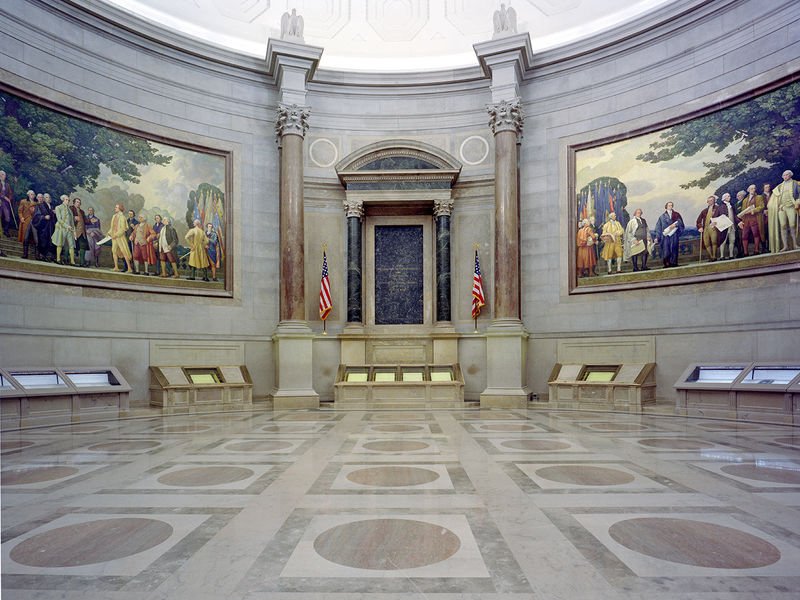

About The National Archive
 Years before the first Archivist of the United States was appointed — before the National Archives and Records Administration even existed — architect John Russell Pope and his team were busy drawing up plans for the National Archives Building in Washington, DC. Since its opening in 1935, this magnificent neoclassical revival building on Pennsylvania Ave, halfway between the White House and the U.S. Capitol, has drawn researchers and visitors from around the globe who have come to research their own family histories and to explore the most important records of our democracy. Today, researchers enter the building on Pennsylvania Avenue, while other visitors enter on Constitution Avenue to explore exhibits and programs at the National Archives Museum.
Fun Facts
-
The vast NARA collection also included some 300,000 reels of film, 5 million maps and charts, about 200,000 sound and video recordings, 9 million aerial photographs, and 14 million still pictures and posters.
-
The National Archives and Records Administration (NARA) was established by an act of the U.S. Congress in 1934 for the purpose of housing, protecting, and displaying the documents and records of United States history.
-
NARA operates thirty-three facilities nationwide, including the main National Archive Building on Pennsylvania Avenue in Washington, D.C., the National Archives at College Park in Maryland, and the Washington National Records Center in Suitland, Maryland.
-
At the beginning of the twenty-first century, the National Archives possessed over 21 million cubic feet of textual materials.
-
At the beginning of the twenty-first century, the National Archives possessed over 21 million cubic feet of textual materials.